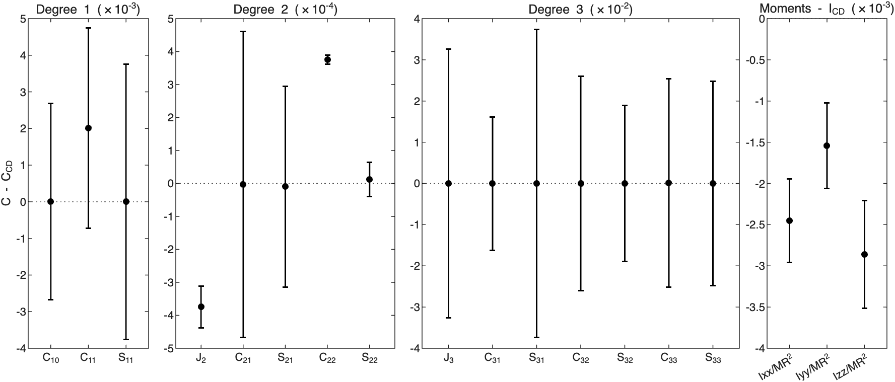
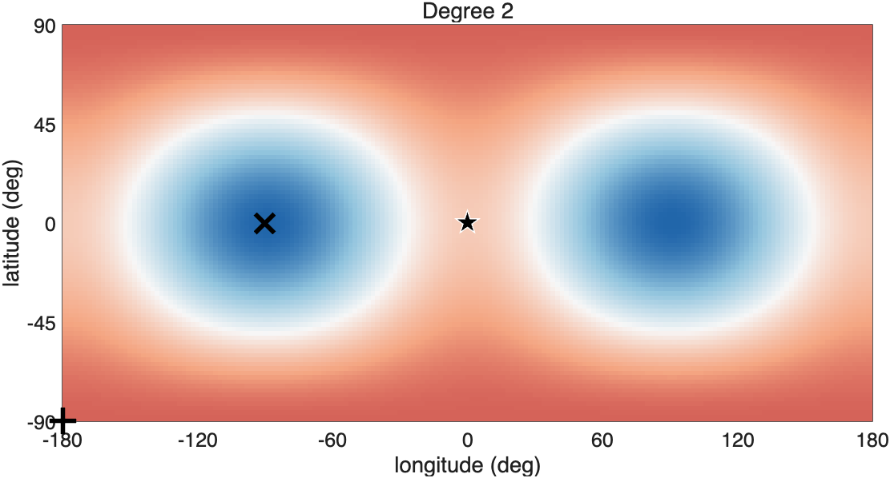
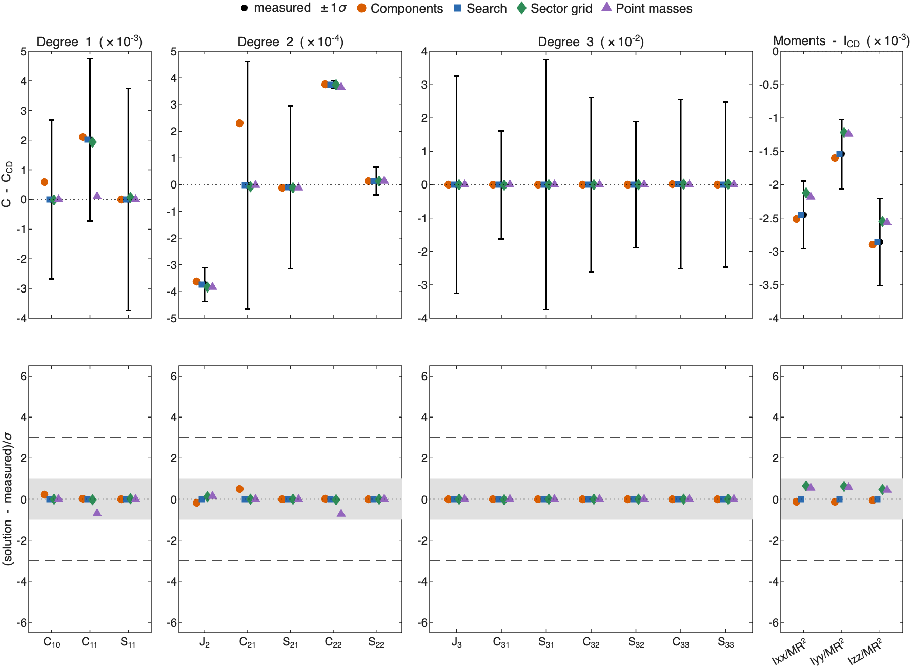
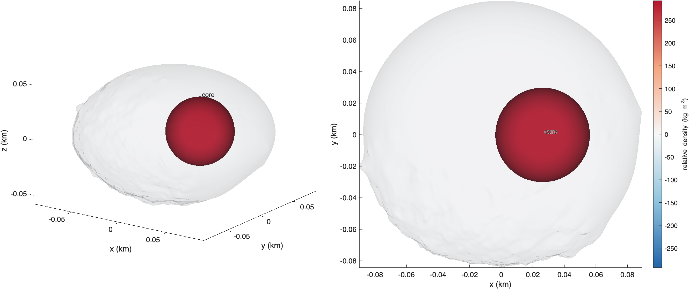
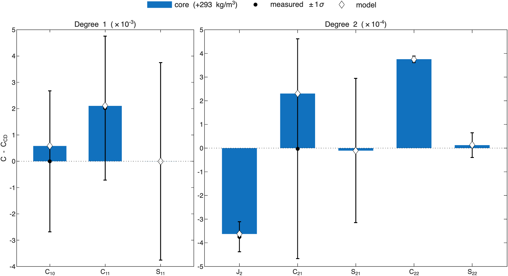
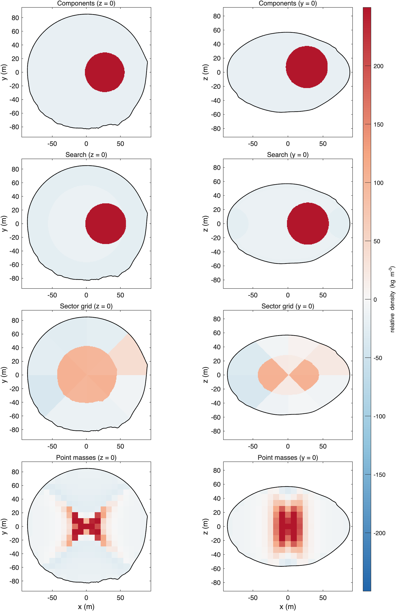
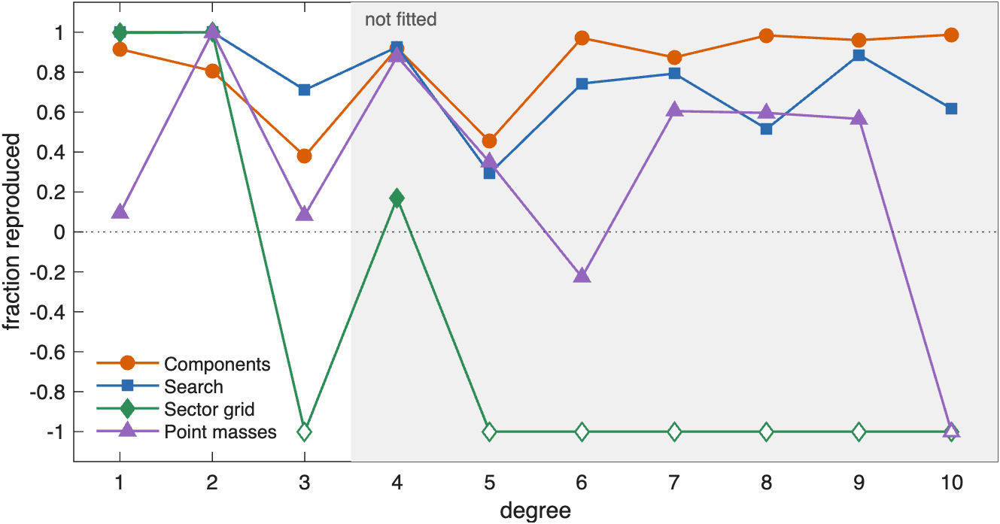

ROB-DATA5: Dimorphos#
Last edited October 28, 2026
ROB-DATA5 has the smallest anomaly of the six packages. Only , and two moments of inertia differ from constant density by more than 3σ. A single dense sphere 28 m from the center toward +x explains them with 4 parameters and ranks first. The point masses tie with it in AIC. They put the same mass at the center, elongated along x like the sphere, but not to one side: the center-of-mass offset the sphere makes is only 1σ in the measurements, and the point masses do not pay for it. ROB's exact values show the offset is real. The sphere reproduces 91% of degrees 1 to 3 and 87 to 99% of each degree from 6 to 10. It reproduces 99% of degree 10; no solution in the other five packages reproduces more than 9% of that degree.
| Kind | Model | Parameters | Reduced χ² | p | AIC | Exact values, degrees 1–3 | Exact values, degrees 4–10 | GRASS acceleration | GRASS direction |
|---|---|---|---|---|---|---|---|---|---|
| Components | core | 4.0 | 0.03 | 1.00 | 8.4 | 0.91 | 0.91 | +0.2% | 0.1° |
| Point masses | 2674 points | 4.5 | 0.10 | 1.00 | 10.3 | 0.15 | 0.79 | −0.6% | 0.1° |
| Sector grid | 2 × 4 × 8 | 7.8 | 0.10 | 1.00 | 16.6 | 0.98 | −0.70 | +0.2% | 0.1° |
| Search | core, torus, layer | 9.0 | < 0.01 | 1.00 | 18.0 | 1.00 | 0.90 | +0.1% | 0.0° |
| Constant density | −0.6% | 0.1° |
The best solution of each kind, by AIC (bold: the lowest). Parameters: the effective number of parameters. Exact values: the fraction of ROB's exact coefficients a solution reproduces, over the fitted degrees 1–3 and over degrees 4–10, which were not (1: all; 0: no better than constant density; negative: worse). GRASS: the predicted acceleration at the surface point minus ROB's, in magnitude (% of ROB's) and direction. See How to read these pages.
1. What the measurements show#

| Measurement | C − C_CD | 1σ | In σ | What it says |
|---|---|---|---|---|
| +6 | lower: mass toward the poles or the center | |||
| +27 | mass toward ±x more than ±y | |||
| −5 | mass closer to the x-axis | |||
| −4 | mass closer to the z-axis |
The measurements more than 3σ from constant density.
is 27σ higher than at constant density: mass has moved toward the ends of the x-axis. is 5σ smaller (mass closer to the x-axis) and 4σ smaller (mass closer to the spin axis). is 6σ lower. The center of mass is 0.31 m toward +x, 1σ: by itself, not a detection.
2. Where the mass is#

Degree 2 takes mass from the ends of the y-axis and puts it at the poles and the ends of the x-axis. The smaller and say the added mass is close to the x-axis and to the center, not near the surface. Mass gathered on the x-axis inside the body makes this, and the 1σ offset toward +x suggests it is on the +x side. The model built for this package places a dense core along that offset by its χ² profile.
3. How well each solution fits#

Every kind fits within 1σ. The single sphere needs 4 parameters and the point masses 4.5; they are 1.9 apart in AIC, a tie. The sector grid and the search fit as closely with 8 to 9 parameters, and rank 8 to 10 behind. Adding a torus or a layer to the sphere lowers χ² by less than the 2 per parameter AIC asks.
4. The model with components#

| Component | Shape and place | Relative density (kg/m³) | Density (kg/m³) | Mass anomaly (kg); makes most of |
|---|---|---|---|---|
| core | sphere, radius 30 m, 28 m from the center toward lat 15°, lon −0° | +293 ± 25 | 1813 | ; +27σ, +6σ |
Background density 1521 kg/m³ (bulk density 1539 kg/m³). Makes most of: the component's part of each coefficient in units of its 1σ.

The core is a sphere of 30 m radius, 28 m from the center toward +x and 15° above the equator, 293 ± 25 kg/m³ denser than the background. Its mass anomaly of 3.3 × 10⁷ kg is 1.2% of the mass of the body. It makes , and the center-of-mass offset.
5. Point masses and components side by side#

| Solution | Mass moved (% of M) | Excess centered at (m) | Deficit centered at (m) |
|---|---|---|---|
| Components | 1.1 | (27, −0, 7) | (−3, −0, −1) |
| Search | 1.0 | (29, 0, 0) | (−3, −0, 0) |
| Sector grid | 0.9 | (11, 2, −0) | (−21, 0, 0) |
| Point masses | 0.8 | (1, 0, −0) | (−1, −0, 0) |
| Correlation | Components | Search | Sector grid | Point masses |
|---|---|---|---|---|
| Components | 1.00 | 0.88 | 0.46 | 0.41 |
| Search | 0.88 | 1.00 | 0.48 | 0.42 |
| Sector grid | 0.46 | 0.48 | 1.00 | 0.47 |
| Point masses | 0.41 | 0.42 | 0.47 | 1.00 |
Mass moved: the mass above the bulk density, as a percentage of the mass of the body. Excess and deficit centers are from the center of figure. Correlation: of the relative densities of the solutions, 8.3 m cell by 8.3 m cell.
The point masses find the core's size and elongation but not its place. They gather a dense column about 50 m across along x at the center, nearly the extent of the sphere along x, symmetric about the center instead of on the +x side. The excess of the sphere is centered 27 m toward +x, that of the point masses 1 m. Degree 2 is the same for mass at +x and at −x. Only the odd degrees tell them apart: degree 3 is fitted but its 1σ is far larger than its anomaly, and degree 1, at 1σ, is too weak for the point-mass regularization to follow. The search finds the same sphere as the model with components (correlation 0.88). The sector grid puts the excess in its inner shell, 11 m toward +x.
6. Against ROB's exact values and the GRASS point#

The exact values settle it. The sphere reproduces 91% of degree 1, the center-of-mass offset the measurements barely saw; the point masses 10%. Over degrees 4 to 10, which no solution was fitted to, the sphere reproduces 91%, the search 90% and the point masses 79%, and the sector grid does worse than constant density (−0.70). From degree 6 on the sphere reproduces 87 to 99% of each degree, while the point masses fail at degrees 6 and 10. A compact sphere on the +x side is what the hidden interior has.
The GRASS point lies at the +x end of the body, above the sphere, but the anomaly is too small there to decide. Constant density is off by only 0.6%. The sphere, the search and the sector grid predict the acceleration to 0.1 to 0.2%, the point masses to 0.6%, all within 0.2° in direction.